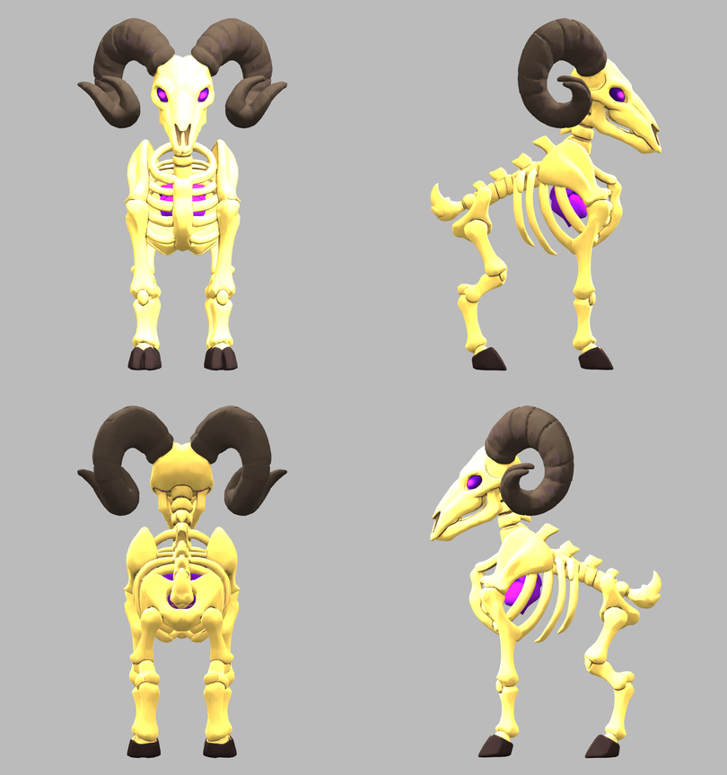

Your export of the second Level III boss, with a four-legged skeleton and 12 moves added by hand. His lower jaw is cut free of the skull so it can gape and clack, the horns and skull move as one hard piece, and the heart in his ribs beats on its own joint. His timings are the game's. Pick a move, drag to turn him, and judge the weight and the hit. Nothing in the game has changed.
Idle or Walk sets what he does between attacks, and Going turns him on the spot. An Action plays over it and repeats until you press it again. Hurt plays on top of anything. Death holds him down: press it again and he spawns back in. The bar names the part of the move that is playing, in the game's own words. Enraged is his state under 40 percent health: the heart beats faster and the eyes and horns burn, and it stays on over every move until you switch it off.

He came through whole and in one welded piece: the two curled horns, the skull with both violet eyes, the open ribs with the heart inside, four separate legs with hooves, and the short tail. His head measures straight, so nothing was corrected. The lower jaw was fused to the skull along the teeth and at the hinge; I cut it free and closed both sides.
| Move | What he does | Timing |
|---|---|---|
| Idle | Dry bones that never rest: a slow sway, the skull looks left and then right, the jaw clacks twice, the tail flicks, and once a loop he cocks his head, chatters his teeth and a shiver runs down the spine. The heart beats in the ribs. | 6 s loop |
| Walk | A stiff, heavy plod in diagonal pairs with the skull carried low and the horns level. The jaw knocks on each step. | Game: 1.2 u/s. 0.7 s a cycle. |
| Turn left, turn right | Steps round on the spot, the skull leading the turn and the tail swinging out. | Game: 75° a second. 0.7 s a cycle. |
| Bone Rush | The chin tucks, the horns come level and the weight rocks back while the left forehoof paws the floor twice. He bursts off his hind legs and covers the lane in three bounds, each hoof on the floor for two or three frames. At the end he drives the crown of the horns into the floor: down on both fore-knees, rump high, hind legs trailing. The floor cracks. He sags, heaves twice with his hindquarters, then the horns tear out first and the forequarters heave up after them. He shakes his head and squares up. | Game: lane 1.3 u wide and up to 7 u long for 54 ticks, rush at 11 u/s, slam 2.5 frames, held 3 frames, stuck 75 ticks with the Horn Guard down, wrench free 2.5 frames. Here the hero stands 5 u away; the game needs him within 6 u and 25° of the Ram's facing. |
| Grave Call | The right forehoof lifts and trembles, the heart swells and the skull goes up. The hoof stamps, the jaw gapes wide and rattles, and three souls are lobbed out: one at the hero and one 2.2 u to either side. A Grave Mole comes up out of the aimed grave. | Game: no warning before the call. Souls fly 60 ticks to Ember rings of radius 1.0 u. The gather here is the last 30 ticks before the call, stamp 2.5 frames, held 3 frames, settle 0.5 s. Every 390 ticks, 270 when enraged. |
| Enrage | He drops his head and rakes the floor twice with the left forehoof, then throws the skull up with the jaw wide and rattles from the horns to the ribs. The Enraged state stays on after it. | Mine: 1.5 s. The game has no pose at 40 percent health, only the faster heart and the burning eyes and horns. |
| Block | Horn Guard. The head dips to meet a shot on the horns and rocks back. Upper body only, so the hooves stay planted. | Mine: 0.36 s. The game stops party shots within 60° of his facing with no pose. |
| Hurt | The skull whips aside, the jaw drops open and the tail tucks. Plays on top of any move. | 0.42 s |
| Heavy hit | Shoved back a step with the skull thrown away and the jaw hanging, he rattles his head and squares up. | 1.1 s |
| Spawn | The floor cracks and he grows out of it in a low crouch. The skull lifts, the eyes and heart light, the jaw clacks twice and the left forehoof stamps. | Game: grow in 7 frames, then stand. The rise, the clacks and the stamp are mine. |
| Death | A jolt, the forelegs buckle, the hindquarters give and he goes down on his right side with the legs sliding out from under him. The skull stays up a moment, trembling, then drops, the jaw falls open and the heart goes dark. | 2.7 s, then he stays down |
A checker takes every point of the model (17,984 of them) through every frame of every move (1,232 frames) and looks for four things. Sizes are in u; he is 2.2 u tall.
| Checked | Found in the first build | Now |
|---|---|---|
| A joint that jumps in one frame (a pop) | The right foreleg flipped over three times as he fell dead (up to 163° in a frame). Both forelegs snapped 111° as he wrenched free. A hind shin jumped 78° at the burst. | None in the death: the legs are now carried by the body as it rolls, and no leg joint turns more than 14° in a frame. The wrench free is in two beats, horns first, and has no pop. What is left is the left foreleg folding to its knee inside the game's 2.5-frame slam (34° in a frame). |
| Any part under the floor | The first slam pose was a heap with the chest and forelegs in the floor. Lying dead, the right shoulder was 0.06 u under. | The horns go 0.06 u into the floor in the slam, on purpose. Otherwise the worst is a hoof rim 0.02 u under as it rolls. Lying dead he is on the floor (0.02 u). |
| One part pushed through another | The folded fore hooves sat inside the hind hooves for the whole time he is stuck (0.06 u). The hind legs lay through each other when dead (0.08 u). The lower horn pressed 0.08 u into the shoulder as he lay. | Stuck and dead are clear of those: the hind hooves stop inside the folded forelegs, and the hind legs part. Still there: a fore hoof passes 0.05 u into a hind leg for 4 to 7 frames in each bound, the horn presses 0.06 u into the shoulder for half a second as he lies down, and the cut edge of the jaw sits 0.03 u inside the neck at the hinge in most moves (0.06 u in the Heavy hit). With the head at its lowest, in the spawn crouch and the enrage coil, the horns and jaw press up to 0.07 u into the chest. |
| Smoothness (a move that stops dead, a loop that jumps) | The walk loop jumped 6° where it restarts. | 0 loop jumps in idle, walk and both turns. |
| What was measured, on every frame of every move | Result |
|---|---|
| A planted hoof moving on the floor (locked feet) | 0 mm in every move, the three bounds of the rush and the stuck knees included |
| A planted hoof its leg could not reach | 0 mm. Twice a hoof in the air is aimed up to 0.14 u past the leg's reach (the last bound, the death's jolt); there the leg simply goes straight. |
| Loops that jump when they restart (idle, walk, both turns) | 0 |
| Head facing straight | Straight on the model: the two horns and the two eyes mirror each other, so nothing was corrected. |
| Tail | Runs as a spring: it trails the body and settles after it stops. |
| Walk and turn | Hooves and knees point straight ahead, no splay. |
These numbers come from the model file. I checked the poses as still frames only: the cloud machine cannot play the page at full speed, so the weight, the timing and the hit are yours to judge.